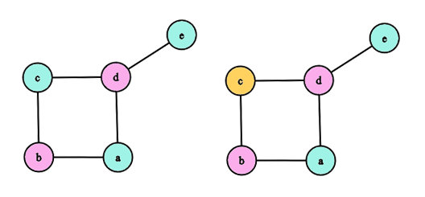

Este algoritmo é uma introdução ao Método Guloso. Vimos anteriormente o Algoritmo de Zykov para determinar o número cromático de um vértice. Tentaremos obter o mesmo resultado através de uma ideia ingênua que aplica o método guloso. Veremos depois que essa ideia não funciona.
Com a finalidade de esclarecer os conceitos sobre o método guloso, a definição abaixo foi retirada do livro do Jayme:
"Considere o seguinte problema geral. Seja dado um conjunto S. Deseja-se determinar um subconjunto S' ⊆ S tal que:
(i) S' satisfaz uma dada propriedade P, e
(ii) S' é máximo (ou mínimo) em relação a algum critério dado α."
O método guloso constrói um ponto do domínio, um elemento por vez, escolhendo, a cada iteração, um elemento que é melhor em termos de um critério guloso α e tal que os elementos já escolhidos juntos com este novo elemento continue a ser parte de um ponto do domínio (satisfazer à propriedade P).
É válido observar que, embora um ponto do domínio é sempre encontrado, nem sempre é possível garantir a maximalidade (ou minimalidade) do subconjunto S' correspondente a sua iteração. Veremos que este é o caso, se a nossa intenção for encontrar a menor coloração possível para um dado grafo.
No nosso caso, para a coloração de vértices, temos que:
Critério α: A menor cor em {1, 2, ..., n}
Propriedade P: Possibilidade de ser atribuida a um dado vértice
Observe que o algoritmo não minimiza a coloração a cada iteração, logo, se a proposta for encontrar o número cromático de um grafo, o algoritmo falha!
No exemplo da esquerda, executamos o algoritmo considerando a ordenação W = {a, b, c, d, e}, já ná da direita, a ordenação é W' = {a, e, b, d, c}
É possível otimizar o algotimo, mantendo uma estrutura que guarda o vértice para uma determinada cor, obtendo complexidade O(n+m). Verificar página 72, do Livro do Jayme (Algoritmo 3.3).